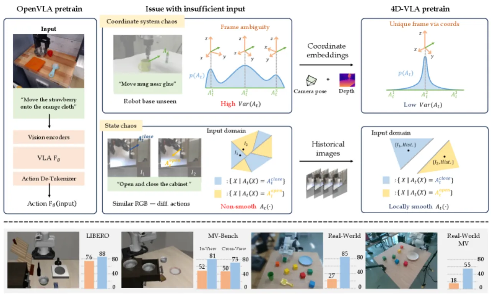
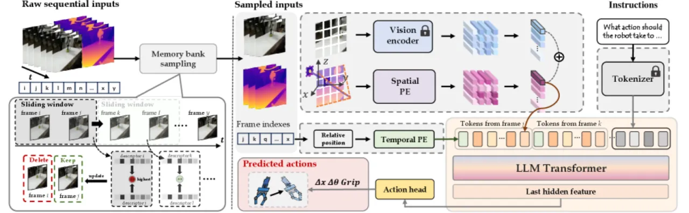
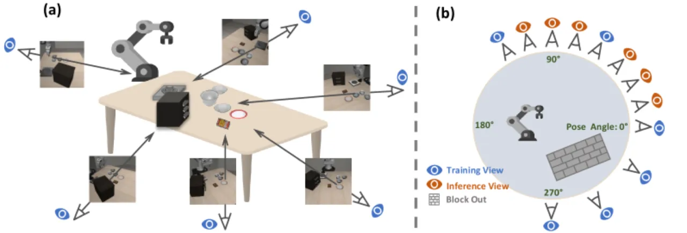
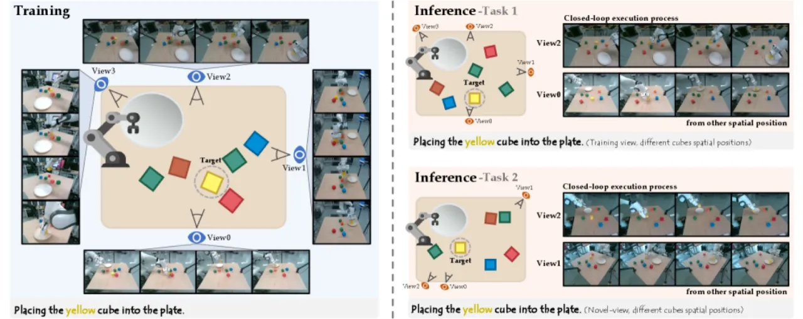
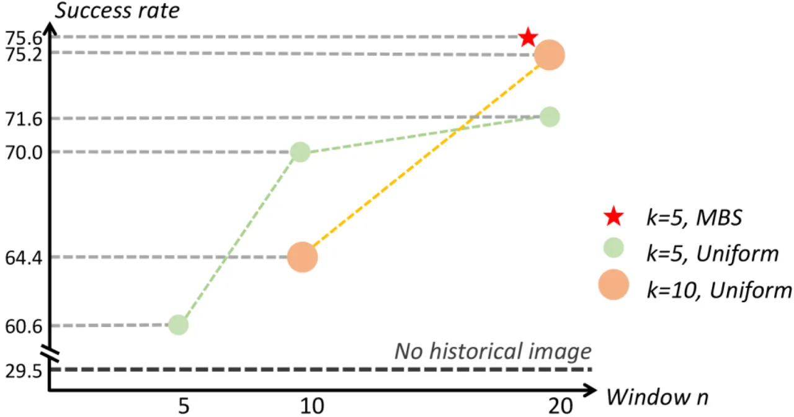

4D-VLA 将 RGB-D 深度信息与历史时序帧融入 VLA 预训练，通过空间对齐 token 和记忆库采样（Memory Bank Sampling）解决多机器人数据集联合训练时出现的"坐标系混乱"与"状态混乱"问题，在 LIBERO 仿真平台和真实操作实验中均大幅超越 OpenVLA 基线。
大规模机器人预训练的关键障碍：当把多个异构机器人数据集混合训练时，单帧 RGB 图像缺乏充足的空间与时序上下文，导致 action 分布极度分散，模型难以收敛。
动作定义在机器人坐标系中，而视觉输入缺乏足够的空间上下文。论文指出："if the image does not fully capture the robot's body, it becomes challenging to infer the robot's exact position and orientation." 不同相机外参与内参使得同一动作在不同数据集中的视觉表征截然不同。
单帧图像缺少必要的时序与上下文线索以消除动作歧义。论文指出这包括"symmetric trajectories——where it is difficult to infer the direction of motion"，以及"visually similar observations correspond to entirely different actions"的情形，使得模型对当前运动方向无法判断。
"We identify two primary factors contributing to incomplete input: coordinate system chaos and state chaos, both of which severely limit the training efficiency achievable with diverse robotic datasets."

4D-VLA 以顺序 RGB-D 输入为基础，构建两类核心机制：① 空间感知视觉 token（Spatial Vision Token）将深度信息提升至世界坐标，实现跨场景坐标系对齐；② 记忆库采样（Memory Bank Sampling, MBS）从时序窗口中自适应挑选 k=5 帧历史信息，既捕捉关键状态变化，又避免冗余。

给定 RGB 图像 I ∈ ℝ³ˣʰˣʷ，视觉编码器 ℰ 提取特征图 fᵥ = ℰ(I)。深度图 D 通过相机外参 [R|T] 和内参 K 反投影得到世界坐标点云 Pₘ，再经可学习位置嵌入 ℰₛ 编码并与视觉特征做逐元素加法：
eˢᵀ = P(ℰ(I) + ℰₛ(Pₘ))
此设计使 token 同时携带外观与精确三维位置信息，消除坐标系混乱。
从长度为 n=20 的历史帧序列中自适应选取 k=5 帧：算法顺序遍历帧组，维护一个相似度队列，保证每帧与已选帧的相似度低于当前队列最大值，从而避免冗余、保留关键状态转变。历史 token 与时序偏移通过可学习编码 ℰₜ(t-j) 注入相对位置信息，最终与当前帧合并：
𝒳 = ⋃ᵢ∈ℋ [eᵢᵀ | eᵢˢᵀ] ∪ {eᵗᵉˣᵗ}
Action head 采用 MLP，在延迟（160.0 ms）与成功率（86.6%）之间取得最优平衡，相比 Autoregressive（0.6 FPS）和 Diffusion head 均有优势。
论文提出 MV-Bench——一个覆盖 270° 前向视角范围内 6 个训练视角的仿真评测集，同时评估 In-View（已见视角）与 Cross-View（偏移 Δ15°/Δ30°）的泛化能力，填补了现有 VLA 多视角评测的空白。

评测平台：LIBERO 仿真基准（4 个子任务）、MV-Bench 多视角仿真评测、真实 Franka 机器臂操作（4 项任务 × 多视角泛化）。基线方法：OpenVLA。所有数字均源自论文原文。
| 方法 | LIBERO-Spatial | LIBERO-Object | LIBERO-Goal | LIBERO-Long | Avg |
|---|---|---|---|---|---|
| OpenVLA | 84.7±0.9 | 88.4±0.8 | 79.2±1.0 | 53.7±1.3 | 76.5±0.6 |
| 4D-VLA（Ours） | 88.9±0.5 | 95.2±0.3 | 90.9±0.4 | 79.1±1.2 | 88.6±0.3 |
| 方法 / 视角类型 | 0° | 60° | 120° | 270° | 300° | 330° | Avg |
|---|---|---|---|---|---|---|---|
| OpenVLA In-View | 57.4 | 50.0 | 50.6 | 43.5 | 53.8 | 57.8 | 52.2 |
| 4D-VLA In-View | 83.2 | 87.0 | 79.5 | 70.2 | 75.8 | 90.2 | 81.0 |
| OpenVLA Cross-View (Δ15°) | — | 50.5 | |||||
| 4D-VLA Cross-View (Δ15°) | — | 73.8 | |||||
| 配置 | Task 1 | Task 2 | Task 3 | Task 4 | Avg |
|---|---|---|---|---|---|
| OpenVLA | 45.00 | 22.50 | 30.00 | 13.33 | 27.70 |
| Base VLA | 35.00 | 20.00 | 5.00 | 2.67 | 15.67 |
| +Pretraining | 60.00 | 60.00 | 40.00 | 28.00 | 47.00 |
| +Pretraining+Coord | 75.00 | 60.00 | 85.00 | 34.67 | 63.67 |
| +Pretraining+Hist | 80.00 | 77.50 | 70.00 | 36.00 | 65.88 |
| Full Model（Ours） | 90.00 | 82.50 | 90.00 | 80.00 | 85.63 |

Table 5 对时序编码方式进行系统消融：可学习相对位置编码 + Concat 融合达到最高成功率 75.6%；使用绝对位置编码则完全失效（0.0%）；去掉所有历史编码降至 63.0%。
Table 8 对帧采样方法进行对比（LIBERO-Spatial）：MBS（0.866）优于单帧（0.738）、Adaptive Pooling（0.604）、Grid Pooling（0.620）和 Q-Former（0.556），同时延迟 160.0 ms 与显存占用 8682.9 MB 均处于合理水平。

论文明确指出："A limitation of our approach is its reliance on RGB-D input, which introduces hardware restriction." 相比纯 RGB 方法，4D-VLA 需要深度传感器，限制了在无深度摄像头场景下的直接部署。
Memory Bank Sampling 引入 k=5 历史帧的 spatial token，相比单帧推理延迟从 76.5 ms 增加至 160.0 ms（约 2.1×）。在对实时性要求极高的场景（如高速操作）下可能存在瓶颈。
空间感知 token 的构造依赖精确的相机内参 K 和外参 [R|T] 将深度图反投影至世界坐标。若标定存在误差或外参在运行中漂移，空间对齐效果会受损，可能影响在标定精度受限场景下的稳定性。